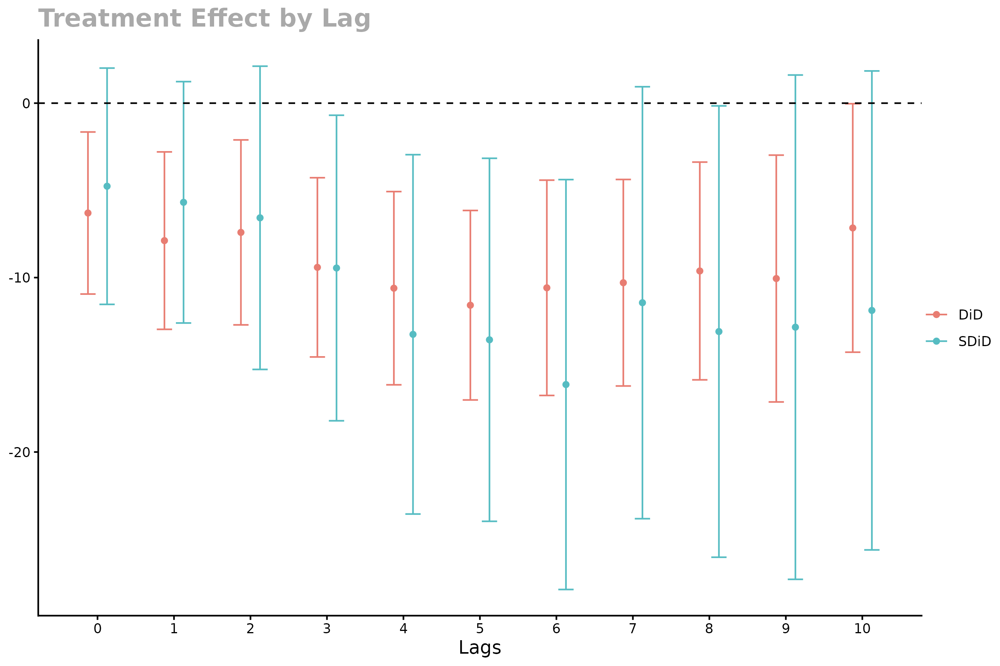

Getting started
Getting_started.RmdFirst, you need to convert your data from long panel to wide one to estimate the effect. The package uses 2 functions to prepare the dataset.
1. to_wide
- Converts panel from long to wide format.
- Creates Y, W and X dataframes with adoption date column being the
first one.
- Y is an N x T outcome dataframe.
- W is N x T dataframe with stair-like structure due to staggered adoption.
- X is dataframe with auxiliary data like weights and covariates.
2. prepare_wide
- If the level is
cohort, aggregates on the data on the cohort level. - If the level is
unit, removes the adoption date column. - The Y and W dataframes are converted to matrices, X dataframe remains the same.
panel <- to_wide(CHC,
unit = 1, time = 3, outcome = 2,
treatment = 4, contr_covs = c(5), treat_covs = c(),
weight = 6
)
panel$X$popwt <- panel$X$popwt / 10000
panel_avg <- prepare_wide(panel, level = "cohort")- Estimate
s^2- noise variance. s2 is utilized in determining the regularization parameter: . To get upper bound ofs^2, time and unit fixed effects are estimated on the untreated observations. Thens^2is computed as residual sum of squares divided by the degrees of freedom. If the weights are passed, WLS is estimated rather then OLS.
s2 <- estimate_s2(panel$Y[, -1], panel$W[, -1], panel$X$popwt)You can change default cohort weights (sum of weights of units in the cohort). To weight the estimated effects by the provided weights, you need to set aggregate_by_weight function for aggregate_effect parameter.
panel_avg$coh_weights## [1] 1504.1080 766.4536 2326.6195 2192.5936 726.5843 1060.1646 166.9377
## [8] 2041.4321 240.5665 296.1709 43.9506 347.0123 75.3100 641.3449
## [15] 333.2621 592.1347 313.2747 477.2299 1627.6912 128.5216- Estimate the treatment effect.
You can specify your own function for aggregate_effect
and penalty_func functions. - The first function specifies
how the aggregation of estimated effects will be conducted. For should
take the following parameters: tau, var, W, coh_weights, N0, N.
- The second function computes regularization parameter
.
If you have any prior domain knowledge on this parameter, you can create
your own function for that. This function should have
s2andNas arguments.
est <- sequential_estimator(
panel_avg,
s2 = s2,
type = "both",
aggregate_effect = aggregate_inv_did_var,
penalty_func = default_penalty
)
print(est, n_lags = 11)## Synthetic DiD:
## -4.76 -5.68 -6.57 -9.45 -13.25 -13.57 -16.13 -11.44 -13.09 -12.84 -11.88
##
## DiD:
## -6.30 -7.88 -7.41 -9.41 -10.61 -11.58 -10.59 -10.30 -9.62 -10.06 -7.15
##
## s2: 2728.60- Conduct Bayesian bootstrap to obtain standard errors for the estimator.
## St. error of SDiD estimator:## 3.46 3.53 4.44 4.47 5.26 5.31 6.00 6.32 6.60 7.38 7.00
cat("St. error of DiD estimator:", "\n")## St. error of DiD estimator:## 2.37 2.60 2.71 2.62 2.83 2.77 3.15 3.02 3.18 3.61 3.63
plot(
est, se, 11,
error_bar_width = 0.4, xlab = "Lags",
legend_position = "right"
)